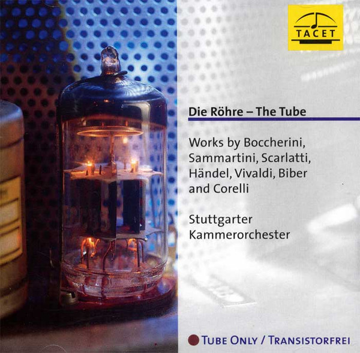

SACD
Die Röhre - The Tube
Luigi Boccherini, Giovanni Sammartini - Domenico Scarlatti, Georg Friedrich Händel, Antonio Vivaldi, Heinrich Ignaz Franz Biber, Arcangelo Corelli, Stuttgarter Kammerorchester
Media: NM · Sleeve: NM
CA$42.00
Discogs SuggestedCA$46.45
Discogs MedianCA$46.45
Discogs HighCA$46.45
- Physical Copy ID
- BB-SACD-125
- Year
- 2003
- Label
- Tacet
- Catalog #
- S 74
- Country
- DEGermany
- Genre / Style
- Classical · Baroque